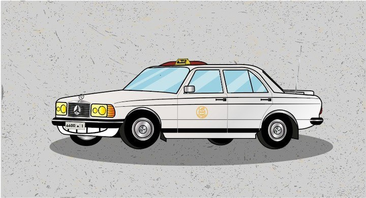
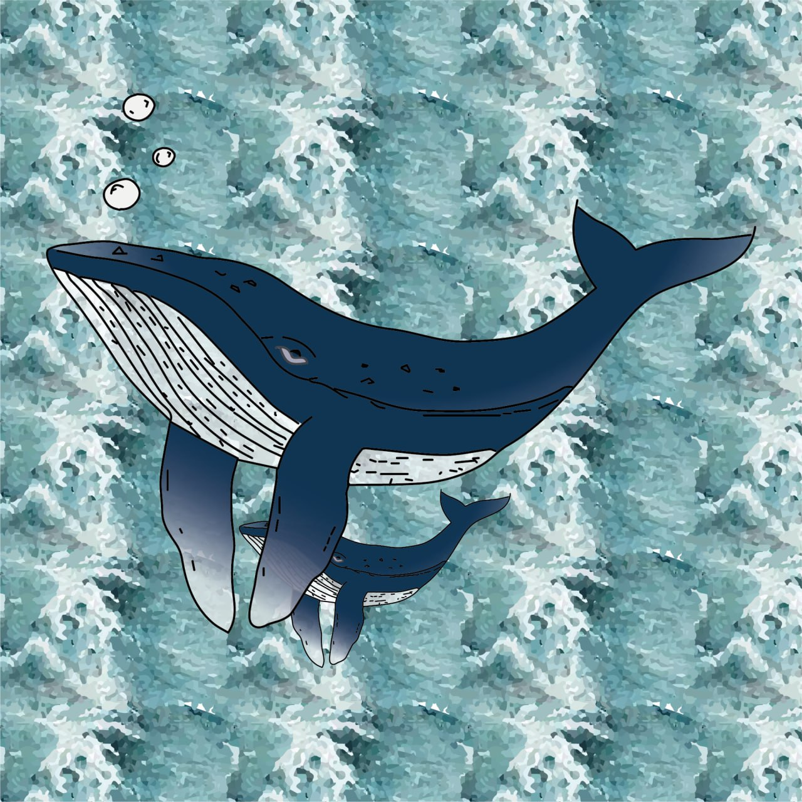
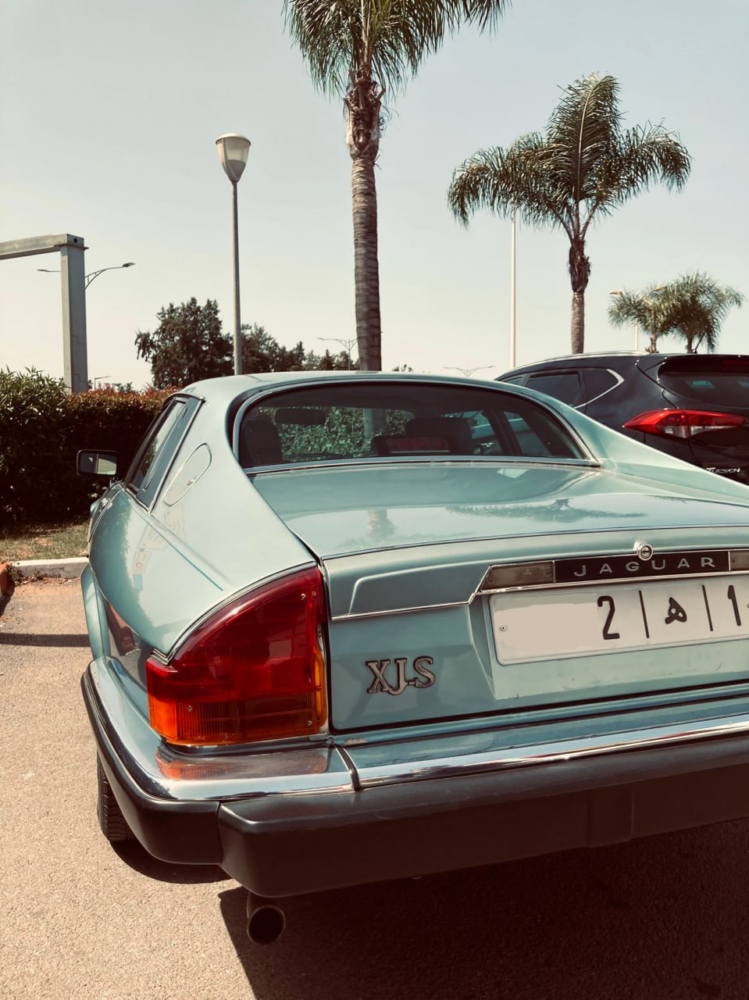
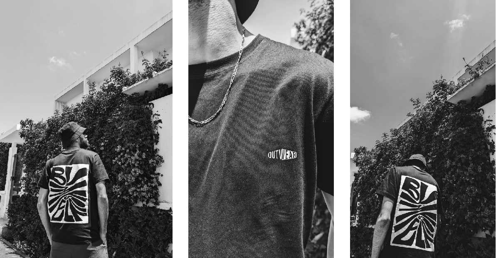

Z
EL BAGARI
Zakaria
A propos de moi
CV
Projets
Contact
Design
04 Dec 2019
Dans cette illustration, j'ai utilisé mes compétences en design pour mettre en valeur le zellige marocain, tout en créant une ambiance qui évoque la rencontre de la culture et du savoir, similaire à celle d'une université
Design

04 Dec 2019
Dans cette illustration, j'ai utilisé mes compétences en design pour capturer l'iconicité de la Mercedes 240, un symbole de nostalgie et de tradition, tout en mettant en avant son allure robuste et son histoire dans les rues du Maroc
UI

04 Dec 2019
Dans cette illustration, j'ai utilisé mes compétences en design pour symboliser la douceur et la protection de la relation parent-enfant, en représentant une baleine et son petit évoluant dans les profondeurs océaniques.
Design

04 Dec 2019
Dans ces photographies, j'ai utilisé mes compétences en photographie de rue pour capturer l'énergie, le mouvement et les histoires cachées dans les scènes quotidiennes de la vie urbaine
E-Commerce

04 Dec 2019
Pour créer outWear, j'ai utilisé mes compétences en design de mode et en création graphique afin de fusionner originalité, fonctionnalité et influences urbaines dans chaque pièce.
See All Posts